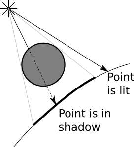
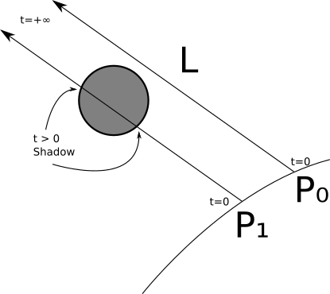
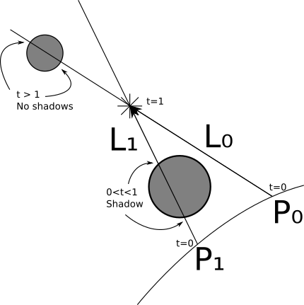
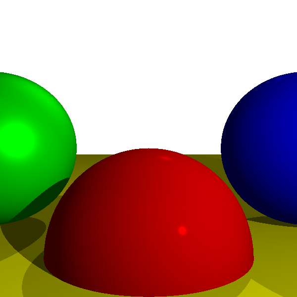
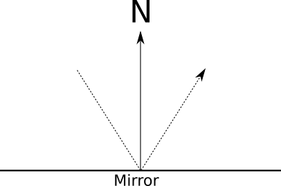
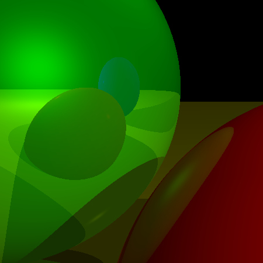
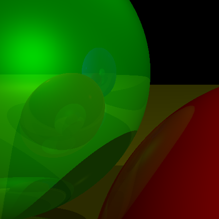
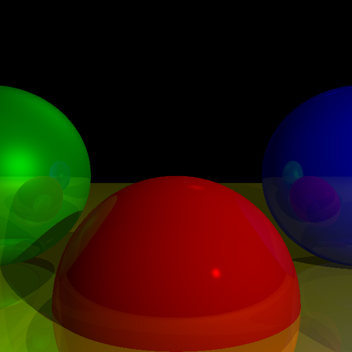

Shadows and Reflections
Our quest to render the scene in progressively more realistic ways continues. In the previous chapter, we modeled the way rays of light interact with surfaces. In this chapter, we’ll model two aspects of the way light interacts with the scene: objects casting shadows and objects reflecting on other objects.
Shadows
Where there are lights and objects, there are shadows. We have lights and objects. So where are our shadows?
Understanding Shadows
Let’s begin with a more fundamental question. Why should there be shadows? Shadows happen when there’s a light whose rays can’t reach an object because there’s some other object in the way.
In the previous chapter, we only looked at the very local interactions between a light source and a surface, while ignoring everything else happening in the scene. For shadows to happen, we need to take a more global view and consider the interaction between a light source, a surface we want to draw, and other objects present in the scene.
Conceptually, what we’re trying to do is relatively simple. We want to add a little bit of logic that says “if there’s an object between the point and the light, don’t add the illumination coming from this light.”
The two cases we want to distinguish are shown in Figure 4-1.

It turns out we already have all of the tools we need to do this. Let’s start with a directional light. We know \(P\); that’s the point we’re interested in. We know \(\vec{L}\); that’s part of the definition of the light. Knowing \(P\) and \(\vec{L}\), we can define a ray, namely \(P + t\vec{L}\), that goes from the point on the surface to the infinitely distant light source. Does this ray intersect any other object? If it doesn’t, there’s nothing between the point and the light, so we compute the illumination from this light as before. If it does, the point is in shadow, so we ignore the illumination from this light.
We already know how to compute the closest intersection between a ray and a sphere: the TraceRay function we’re using to trace the rays from the camera. We can reuse most of it to compute the closest intersection between the ray of light and the rest of the scene.
The parameters for this function are slightly different, though:
Instead of starting from the camera, the ray starts from \(P\).
The direction of the ray is not \((V - O)\) but \(\vec{L}\).
We don’t want objects behind \(P\) to cast shadows over it, so we need \(t_{min} = 0\).
Since we’re dealing with directional lights, which are infinitely far away, a very distant object should still cast a shadow over \(P\), so \(t_{max} = +\infty\).
Figure 4-2 shows two points, \(P_0\) and \(P_1\). When tracing a ray from \(P_0\) in the direction of the light, we find no intersections with any objects; this means the light can reach \(P_0\), so there’s no shadow over it. In the case of \(P_1\), we find two intersections between the ray and the sphere, with \(t > 0\) (meaning the intersection is between the surface and the light); therefore, the point is in shadow.

We can treat point lights in a very similar way, with two exceptions. First, \(\vec{L}\) is not constant, but we already know how to compute it from \(P\) and the position of the light. Second, we don’t want objects farther away from the light to be able to cast a shadow over \(P\), so in this case we need \(t_{max} = 1\) so that the ray “stops” at the light.
Figure 4-3 shows these situations. When we cast a ray from \(P_0\) with direction \(L_0\), we find intersections with the small sphere; however, these have \(t > 1\), meaning they are not between the light and \(P_0\), so we ignore them. Therefore \(P_0\) is not in shadow. On the other hand, the ray from \(P_1\) with direction \(L_1\) intersects the big sphere with \(0 < t < 1\), so the sphere casts a shadow over \(P_1\).
There’s a literal edge case we need to consider. Consider the ray \(P + t\vec{L}\). If we look for intersections starting from \(t_{min} = 0\), we’ll find one at \(P\) itself! We know \(P\) is on a sphere, so for \(t = 0\), \(P + 0\vec{L} = P\) ; in other words, every point would be casting a shadow over itself!

The simplest workaround is to set \(t_{min}\) to a very small value \(\epsilon\) instead of \(0\). Geometrically, we’re saying we want the ray to start just a tiny bit off the surface where \(P\) is, rather than exactly at \(P\). So the range will be \([\epsilon, +\infty]\) for directional lights and \([\epsilon, 1]\) for point lights.
It might be tempting to fix this by just not computing intersections between the ray and the sphere \(P\) belongs to. This would work for spheres, but it would fail for objects with more complex shapes. For example, when you use your hand to protect your eyes from the Sun, your hand is casting a shadow over your face, and both surfaces are part of the same object - your body.
Rendering with Shadows
Let’s turn the above discussion into pseudocode.
In its previous version, TraceRay computes the closest ray-sphere intersection, and then computes lighting on the intersection. We need to extract the closest intersection code, since we want to reuse it to compute shadows (Listing 4-1).
ClosestIntersection(O, D, t_min, t_max) {
closest_t = inf
closest_sphere = NULL
for sphere in scene.Spheres {
t1, t2 = IntersectRaySphere(O, D, sphere)
if t1 in [t_min, t_max] and t1 < closest_t {
closest_t = t1
closest_sphere = sphere
}
if t2 in [t_min, t_max] and t2 < closest_t {
closest_t = t2
closest_sphere = sphere
}
}
return closest_sphere, closest_t
}We can rewrite TraceRay to reuse that function, and the resulting version is much simpler (Listing 4-2).
TraceRay(O, D, t_min, t_max) {
closest_sphere, closest_t = ClosestIntersection(O, D, t_min, t_max)
if closest_sphere == NULL {
return BACKGROUND_COLOR
}
P = O + closest_t * D
N = P - closest_sphere.center
N = N / length(N)
return closest_sphere.color * ComputeLighting(P, N, -D, closest_sphere.specular)
}TraceRay after factoring out ClosestIntersectionThen, we need to add the shadow check ❶ to ComputeLighting (Listing 4-3).
ComputeLighting(P, N, V, s) {
i = 0.0
for light in scene.Lights {
if light.type == ambient {
i += light.intensity
} else {
if light.type == point {
L = light.position - P
t_max = 1
} else {
L = light.direction
t_max = inf
}
// Shadow check
❶ shadow_sphere, shadow_t = ClosestIntersection(P, L, 0.001, t_max)
if shadow_sphere != NULL {
continue
}
// Diffuse
n_dot_l = dot(N, L)
if n_dot_l > 0 {
i += light.intensity * n_dot_l / (length(N) * length(L))
}
// Specular
if s != -1 {
R = 2 * N * dot(N, L) - L
r_dot_v = dot(R, V)
if r_dot_v > 0 {
i += light.intensity * pow(r_dot_v / (length(R) * length(V)), s)
}
}
}
}
return i
}ComputeLighting with shadow supportFigure 4-4 shows what the freshly rendered scene looks like.

Now we’re getting somewhere. Objects in the scene interact with each other in a more realistic way, casting shadows over each other. Next we’ll explore more interactions between objects—namely, objects reflecting other objects.
Reflections
In the previous chapter, we talked about surfaces that are “mirror-like,” but that only gave them a shiny appearance. Can we have objects that look like true mirrors—that is, can we see other objects reflected on their surface? We can, and in fact doing this in a raytracer is remarkably simple, but it can also be mind-twisting the first time you see how it’s done.
Mirrors and Reflection
Let’s look at how mirrors work. When you look at a mirror, what you’re seeing are the rays of light that bounce off the mirror. Rays of light are reflected symmetrically with respect to the surface normal, as you can see in Figure 4-5.

Suppose we’re tracing a ray, and the closest intersection happens to be with a mirror. What color is this ray of light? It’s not the color of the mirror itself, because we’re looking at reflected light. So we need to figure out where this light is coming from and what color it is. So all we have to do is compute the direction of the reflected ray and figure out the color of the light coming from that direction.
If only we had a function that, given a ray, returned the color of the light coming from its direction . . .
Oh, wait! We do have one, and it’s called TraceRay!
At the main loop, for each pixel, we create a ray from the camera to the scene and we call TraceRay to figure out what color the camera “sees” in that direction. If TraceRay determines that the camera is seeing a mirror, it just needs to compute the direction of the reflected ray and to figure out the color of the light coming from that direction; it must call . . . itself.
At this point, I suggest you read the last couple of paragraphs again until you get it. If this is the first time you’ve read about recursive raytracing, it may take a couple of reads and some head scratching until you really get it.
Go on, I’ll wait—and once the euphoria of this beautiful aha! moment has started to wane, let’s formalize this a bit.
When we design a recursive algorithm (one that calls itself), we need to ensure we don’t cause an infinite loop (also known as “This program has stopped responding. Do you want to terminate it?”). This algorithm has two natural exit conditions: when the ray hits a non-reflective object and when it doesn’t hit anything. But there’s a simple case where we could get trapped in an infinite loop: the infinite hall effect. This is what happens when you put a mirror in front of another and look into it—infinite copies of yourself!
There are many ways to prevent an infinite recursion. We’ll just introduce a recursion limit to the algorithm; this will control how “deep” it can go. Let’s call it \(r\). When \(r = 0\), we see objects but no reflections. When \(r = 1\), we see objects and the reflections of some objects on them (Figure 4-6).

When \(r = 2\), we see objects, the reflections of some objects, and the reflections of the reflections of some objects (and so on for greater values of \(r\)). Figure 4-7 shows the result of \(r = 3\). In general, it doesn’t make much sense to go deeper than three levels, since the differences are barely noticeable at that point.

We’ll make another distinction. “Reflectiveness” doesn’t have to be an all-or-nothing proposition; objects may be only partially reflective. We’ll assign a number between \(0\) and \(1\) to every surface, specifying how reflective it is. Then we’ll compute the weighted average of the locally illuminated color and the reflected color using that number as the weight.
Finally, what are the parameters for the recursive call to TraceRay?
The ray starts at the surface of the object, \(P\).
The direction of the reflected ray is the direction of the incoming ray bouncing off \(P\); in
TraceRaywe have \(\vec{D}\), the direction of the incoming ray towards \(P\), so the direction of the reflected ray is \(\vec{-D}\) reflected with respect to \(\vec{N}\).Similar to what happened with the shadows, we don’t want objects to reflect themselves, so \(t_{min} = \epsilon\).
We want to see objects reflected, no matter how far away they are, so \(t_{max} = +\infty\).
The recursion limit is one less than the current recursion limit (to avoid an infinite recursion).
Now we’re ready to turn this into actual pseudocode.
Rendering with Reflections
Let’s add reflections to our raytracer. First, we modify the scene definition by adding a reflective property to each surface, describing how reflective it is, from 0.0 (not reflective at all) to 1.0 (a perfect mirror):
sphere {
center = (0, -1, 3)
radius = 1
color = (255, 0, 0) # Red
specular = 500 # Shiny
reflective = 0.2 # A bit reflective
}
sphere {
center = (-2, 0, 4)
radius = 1
color = (0, 0, 255) # Blue
specular = 500 # Shiny
reflective = 0.3 # A bit more reflective
}
sphere {
center = (2, 0, 4)
radius = 1
color = (0, 255, 0) # Green
specular = 10 # Somewhat shiny
reflective = 0.4 # Even more reflective
}
sphere {
color = (255, 255, 0) # Yellow
center = (0, -5001, 0)
radius = 5000
specular = 1000 # Very shiny
reflective = 0.5 # Half reflective
}
We already use the “reflect ray” formula during the computation of specular reflections, so we can factor it out. It takes a ray \(\vec{R}\) and a normal \(\vec{N}\) and returns \(\vec{R}\) reflected with respect to \(\vec{N}\).
ReflectRay(R, N) {
return 2 * N * dot(N, R) - R;
}
The only change we need to make to ComputeLighting is replacing the reflection equation with a call to this new ReflectRay.
There’s a small change in the main method—we need to pass a recursion limit to the top-level TraceRay call:
color = TraceRay(O, D, 1, inf, recursion_depth)
We can set the initial value of recursion_depth to a sensible value such as 3, as discussed previously.
The only significant changes happen near the end of TraceRay, where we compute the reflections recursively. You can see the changes in Listing 4-4.
TraceRay(O, D, t_min, t_max, recursion_depth) {
closest_sphere, closest_t = ClosestIntersection(O, D, t_min, t_max)
if closest_sphere == NULL {
return BACKGROUND_COLOR
}
// Compute local color
P = O + closest_t * D
N = P - closest_sphere.center
N = N / length(N)
local_color = closest_sphere.color * ComputeLighting(P, N, -D, closest_sphere.specular)
// If we hit the recursion limit or the object is not reflective, we're done
❶ r = closest_sphere.reflective
if recursion_depth <= 0 or r <= 0 {
return local_color
}
// Compute the reflected color
R = ReflectRay(-D, N)
❷ reflected_color = TraceRay(P, R, 0.001, inf, recursion_depth - 1)
❸return local_color * (1 - r) + reflected_color * r
}The changes to the code are surprisingly simple. First, we check whether we need to compute reflections at all ❶. If the sphere is not reflective or we hit the recursion limit, we’re done, and we can just return the sphere’s own color.
The most interesting change is the recursive call ❷; TraceRay calls itself, with the appropriate parameters for reflection and, importantly, decrementing the recursion depth counter; this, combined with the check ❶, prevents an infinite loop.
Finally, once we have the sphere’s local color and the reflected color, we blend them together ❸, using “how reflective this sphere is” as the blending weight.
I’ll let the results speak for themselves. Check out Figure 4-8.

Summary
In the previous chapters, we developed a basic framework to render a 3D scene on a 2D canvas, modeling the way a ray of light interacts with the surface of an object. This gave us a simple initial representation of the scene.
In this chapter, we extended this framework to model how different objects in the scene interact not only with rays of light, but with each other—by casting shadows over each other and by reflecting each other. As a result, the rendered scene looks significantly more realistic.
In the next chapter, we’ll briefly discuss different ways to extend this work, from representing objects other than spheres to practical considerations such as rendering performance.